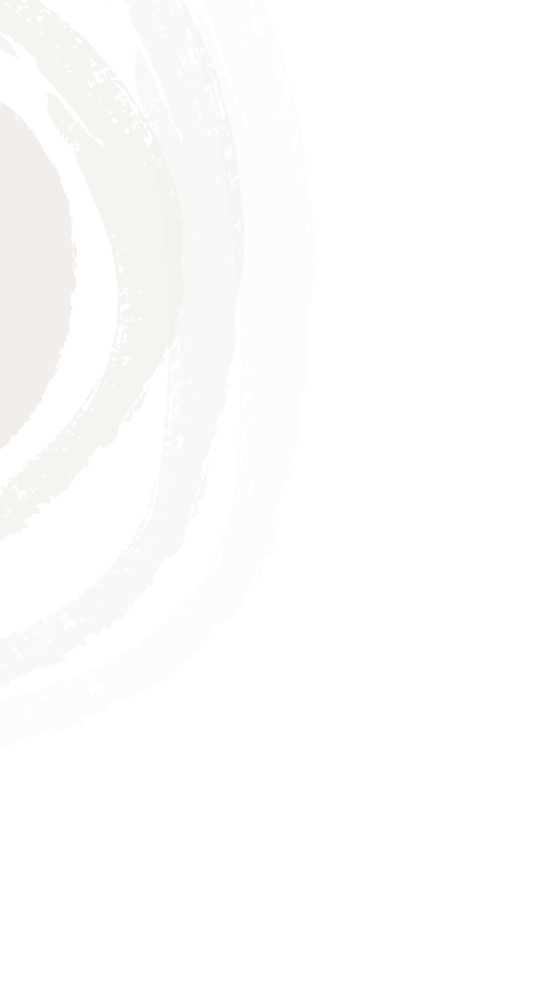
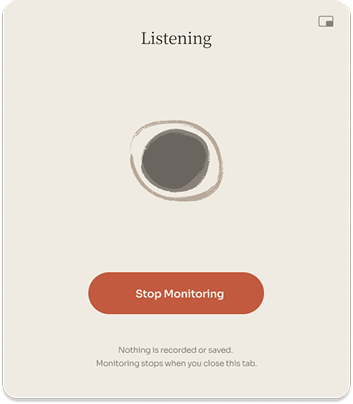

Mezzo gives you quiet, visual feedback when your speaking volume rises — so you can adjust without anyone else noticing. How it works
Try MezzoYou can stop anytime. Nothing is saved.
No recording. No transcription. Just volume.

Speak normally for a few seconds. Mezzo sets your baseline.
When you're in range, Mezzo stays invisible.
If you get louder, the feedback gradually appears. Ease up? It fades away.
Works in a browser tab or picture-in-picture.
Mezzo doesn't record audio, transcribe speech, or send anything anywhere. Your mic data stays in your browser and disappears when you close the tab.